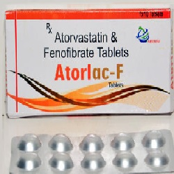

Fenofibrate

Fenofibrateကို
- Tricor, Triglide စသော နာမည်နှင့် ဈေးကွက်တွင် တွေ့ရသည်။
- Fenofibrate သည် မကောင်းသော ကိုလက်စရောများ (LDL, Triglycerides) ကို လျော့နည်းစေပြီး ခန္ဓာကိုယ်အတွက် ကောင်းသော ကိုလက်စရောများ (HDL) များကို များစေသည်။
- အဆီများကို ခြေဖျက်သော အင်ဇိုင်းများကို များစေခြင်းဖြင့် မကောင်းသော ကိုလက်စရောများ (LDL, Triglycerides)ကို လျော့နည်းစေခြင်း ဖြစ်သည်။
အသုံးဝင်ပုံ
- ခန္ဓာကိုယ်တွင် မကောင်းသော ကိုလက်စရောများ (LDL, Triglycerides) များလာသောအခါ မုန့်ချိုအိတ်ကို ရောင်ရမ်းစေသည်။
- Fenofibrate သည် ထိုမကောင်းသော ကိုလက်စရောများ (LDL, Triglycerides) ကို လျော့ နည်းစေခြင်းဖြင့် မုန့်ချိုအိတ်ရောင်ရမ်းခြင်း ကို လျော့ချပေးသည်။ သို့ရာတွင် Fenofibrate သည် နှလုံးရောဂါ နှင့် လေဖြတ်ခြင်းကို မကာကွယ်ပါ။
သုံးစွဲပုံ
- သောက်ဆေး အမျိုးအစား ဖြစ်သည်။
-
- ဆရာဝန်ညွှန်ကြားချက်နှင့် အညီ တစ်နေ့ တစ်ကြိမ်သာ သောက်ရန် လိုသည်။
- ဆရာဝန် ညွှန်းကြားချက် မရှိဘဲ တံဆိပ်ပြောင်း သုံးခြင်း မပြုလုပ်ရပါ။
- တစ်ခြားဆေးများ သုံးစွဲနေပါက Fenofibrate ကို တစ်ခြားဆေးမသောက်ခင် တစ်နာရီအလို သို့မဟုတ် တစ်ခြားဆေးသောက်ပြီး ၄ နာရီ ကျော်မှ သောက်ပါ။ ပိုမို စုပ်ယူမှု အားကောင်းရန် အတွက် ဖြစ်သည်။
- ထို့အပြင် ပုံမှန်လေ့ကျင့်ခန်း နှင့် အစားအသောက်ကို ထိန်းညှိရန် လိုအပ်သည်။
ဘေးထွက်ဆိုးကျိုးများ
- သိသာအဖြစ်များသော ဘေးထွက်ဆိုးကျိုးမရှိပါ။
အဖြစ်နည်းသော ဘေးထွက်ဆိုးကျိုးများမှာ–
- သည်းခြေကျောက်တည်ခြင်းနှင့် အသည်းရောဂါများ
- ကြွက်သား ပြသနာများ
- ကျောက်ကပ် ပြသနာများ
- ဓါတ်မတည့်ခြင်းတို့ဖြစ်သည်။ ထို့ကြောင့် ဓါတ်ခွဲခန်းတွင် Kidney/Liver Function Test, Complete Blood Count စသည်တို့ကို စစ်ရန် လိုသည်။
သတိပြုရမည့် အချက်များ
- Fenofibrate မသုံးခင် သည်းခြေကျောက်တည်ခြင်းနှင့် အသည်းရောဂါများ ကျောက်ကပ် ရောဂါများနှင့် အရက်သောက်ထားခြင်း ရှိပါက ဆရာဝန်ကို ပြောပြရန် လိုသည်။
- ကိုယ်ဝန်ဆောင်များနှင့် နို့တိုက်မိခင်များတွင် သောက်သုံးရန် မသင့်ပါ။
ဆေးအာနိသင်
Warfarin ကဲ့သို့သော သွေးကျဲဆေးများ နှင့် Fenofibrate ကိုတွဲသောက်ပါက အပြန်အလှန် အာနိသင် သက်ရောက်မှု ရှိသည်။
ဆေး အလွန်အကျွံ သုံးခြင်း
ဘေးထွက်ဆိုးကျိုး လက္ခဏာများ ဆိုးရွားပါက သို့မဟုတ် အသက်ရှူရခက်ပါက အဆိပ်ကုဌာန သို့ အမြန်ဆုံးသွားရန် လိုသည်။
- ဆေးတွေကို ဘယ်ဆေးမဆို ဆရာဝန် ဒါမှမဟုတ် တတ်ကျွမ်းနားလည်တဲ့ ကျန်းမာရေးဝန်ထမ်းတွေရဲ့ ညွှန်ကြားချက်အတိုင်း တိတိကျကျ သောက်သင့်ပါတယ်။
- မိမိသဘောနဲ့ဆေးရပ်လိုက်တာမျိုး မလုပ်သင့်ပါဘူး။
- ဘေးထွက်ဆိုးကျိုး ပြင်းပြင်းထန်ထန် ခံစားရရင်တော့ ဆရာဝန်နဲ့တိုင်ပင်ဖို့ လိုအပ်ပါတယ်။
Source– ဒေါက်တာချစ်စန္ဒီကျော်